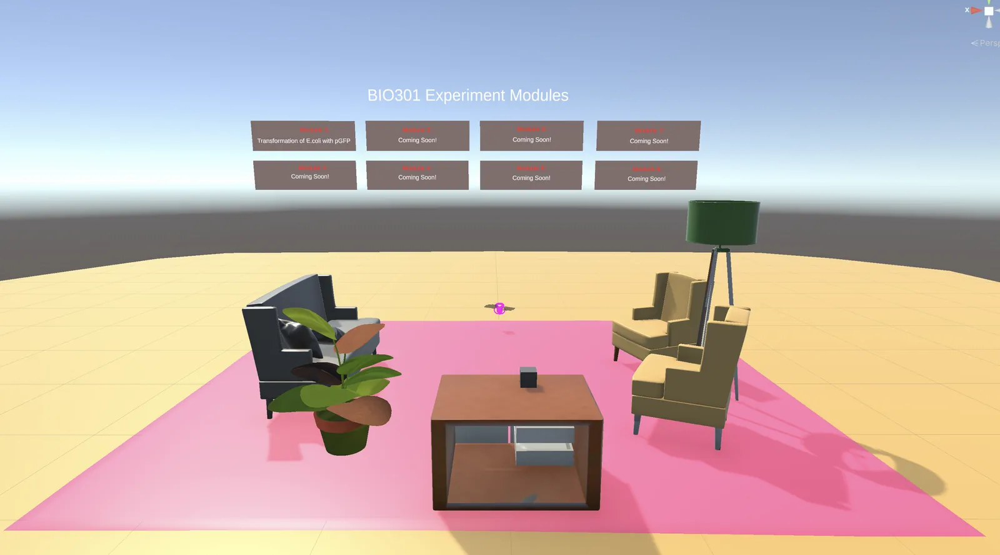
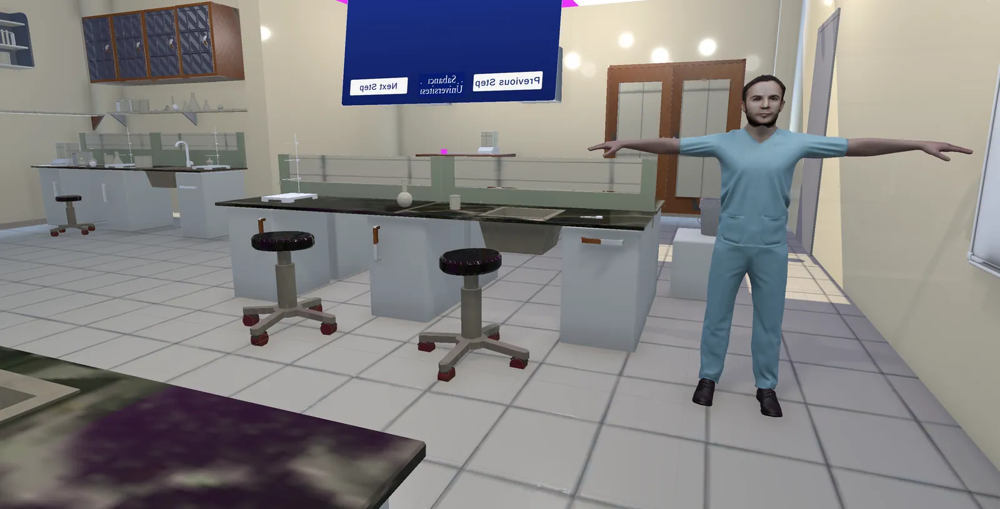
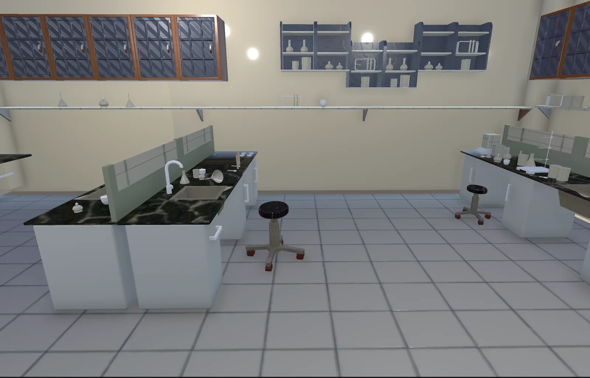
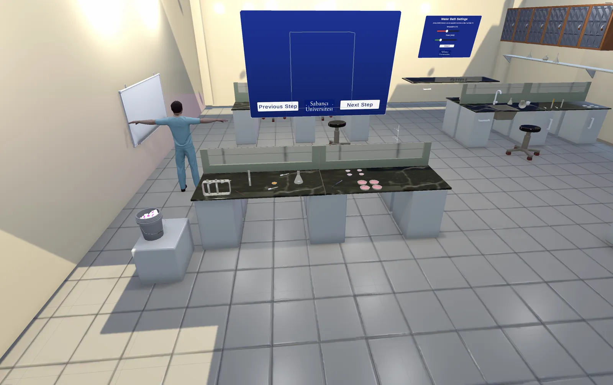

← My works/ 04
VR development & HCI research · 2023 – 2025
Multi-User VR Lab
Real lab work is collaborative, but most VR learning tools are built for one person. Our capstone: a lab where several people share one session.

The problem
Most VR educational tools are built for one person at a time, so they miss the collaboration real lab work requires.
What we did
A Unity lab on Photon Fusion where several people share a session, sync equipment, and get through lab tasks together.
Background
A lab is a team sport
Single-user VR is fine for teaching basic concepts, but it misses what makes a lab work: people communicating and doing things together.
We built around real multi-user interaction, where object states stay synced, and focused on tasks that need coordination: transferring liquids between test tubes, preparing solutions and handling scientific tools.


Development
Grab it, pour it, and everyone sees it
We built the environment in Unity with a physics-based system, so people can grab objects, manipulate lab tools and watch changes happen in real time. Holding objects, changing liquid levels, activating equipment: everything stays network-synced.
- Core interaction logic
- Collider-based fluid manipulation
- Object ownership transfer through Photon
- Custom VR controller handling

Multi-user
Seeing what everyone else is doing
Photon Fusion keeps real-time connections stable. Everyone shows up as an avatar, with object states, transforms and procedural steps synced across the network.
That's what lets learners talk to each other, follow what someone else is doing, and finish tasks as a group.
Motion capture
A real person, not a preset
We recorded an actual lab worker's movements with a Rokoko suit, cleaned up the data in Blender, and retargeted it onto a humanoid rig in Unity. With their permission, we modeled the avatar's face on them too.
That demonstrator walks users through proper lab procedures, and they replicate the workflow afterward. Real motion data made the instruction feel far more natural than animated presets.
Tools
Tested on the headset, all the way through
- Unity (C#)
- Photon Fusion
- Oculus Quest
- Blender
- Rokoko SmartSuit Pro
- Eye tracking
Outcome
Learning by doing, together
The final system shows how VR can support collaborative scientific training: real motion data, networked interaction and a space that feels three-dimensional. People work together, watch demonstrations and learn procedures hands-on instead of reading about them.
It's a starting point for something bigger: AI-assisted instruction, more procedural content, or simulations with a different role for each user.
Reflection
What this taught me
On a screen you can predict almost every click. In VR, people reach at odd angles, walk into things, and grab objects before you meant them to. We had to design around those differences before they became problems, instead of fixing them after.
Next project · 05
UniSphere
A mobile app that helps international students find advice they can actually trust.